密码学实验
第一次实验报告
实验目的
1、通过本次实验，熟悉编程环境，为后续实验做好铺垫。 2、回顾数论以及有限域上的的基本算法，加深对其理解，为本学期密码学课程及实验课打好基础。 3 、通过本次实验， 了解上元素的性质及其四则运算。 4 、掌握上的不可约多项式的判定和生成算法。
实验环境
- 操作系统：Windows 10
- 编程语言：Python3.11.1
欧几里得拓展算法
数学原理
拓展欧几里得算法是求解两个数的最大公约数的同时，计算出满足贝祖等式 \(ax+by=\gcd(a,b)\) 的 \(x\) 和 \(y\) 的算法。其核心思想是通过递归辗转相除的方式，求解出 \(a\) 和 \(b\) 的最大公约数，同时利用递归回溯的过程，求解出满足贝祖等式的 \(x\) 和 \(y\)。
具体地，假设 \(a > b\)，则有：
\[gcd(a,b)\\=gcd(b,amodb)\\=gcd(b,a−q⋅b) \]
其中，\(q = \lfloor \frac{a}{b} \rfloor\)，\(\gcd(a,b)\) 表示 \(a\) 和 \(b\) 的最大公约数。在每一次递归中，我们都能够求解出 \(x\) 和 \(y\) 的值。
求出x，y，gcd后，我们可根据以下下面给出拓展欧几里得算法的通解：
令 \(a\) 和 \(b\) 为非负整数，且 \(\gcd(a,b) = d\)，则方程 \(ax + by = d\) 的一组整数解为：
x = x0 + (b/d)*t |
其中 \(t\) 为任意整数，\((x_0,y_0)\) 是方程 \(ax_0 + by_0 = d\) 的一组特解。
特别地，当 \(a\) 和 \(b\) 互质时，即 \(\gcd(a,b) = 1\) 时，\(d=1\)，方程变为 \(ax + by = 1\)，此时通解为：
x = x0 + b*t |
故可据此可得到x为最小正整数时的解
实验步骤
算法流程
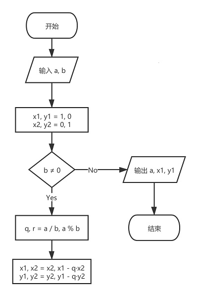
程序实现
我们使用Python编程语言实现了拓展欧几里得算法，其伪代码如下：
FUNCTION extended_euclidean_algorithm(a, b) |
该算法的输入为两个整数 \(a\) 和 \(b\)，输出为 \(\gcd(a,b)\)，以及满足贝祖等式的 \(x\) 和 \(y\)。
程序测试
以下为我的具体实现代码：
def extended_euclidean_algorithm(a, b): |
函数调用图
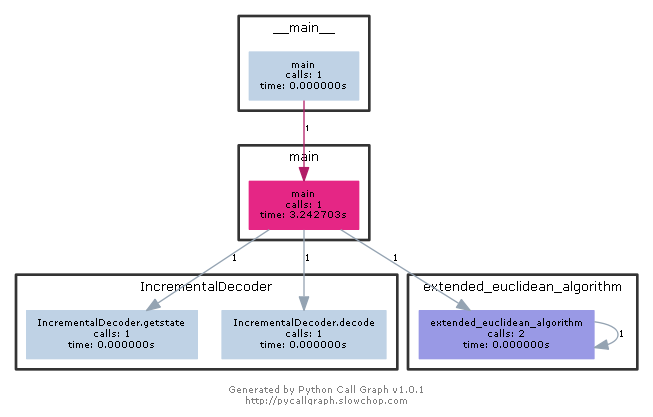
测试案例
运行结果截图
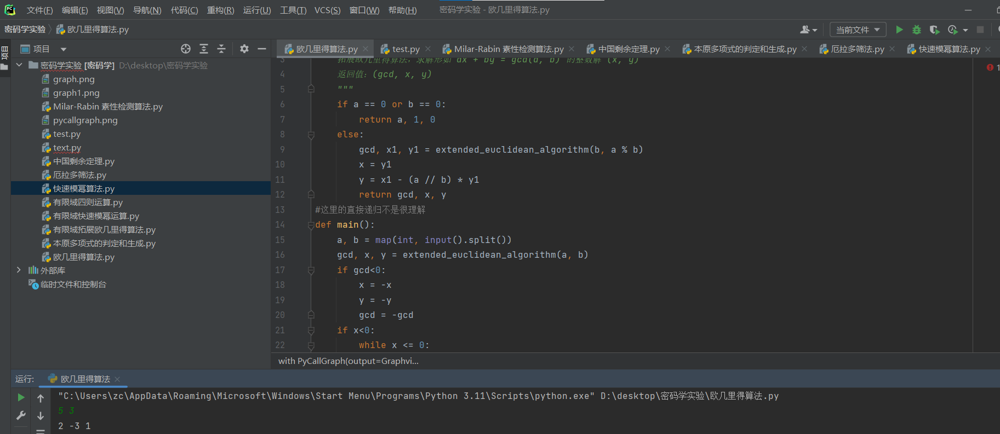
实验感想
一开始没有想出利用通解来求得最小正整数的x值时，反复在递归中进行修改与比对，浪费过多无用的时间和精力！下次要学会从源头从算法出发
快速模幂算法
数学原理
流程如下：
- 将指数 b 转换成二进制形式，记为 b = b_k b_{k-1} ... b_2 b_1 b_0。
- 初始值设为 x = 1，然后对于每一位 b_i，如果 b_i = 1，则将 x等于x乘以 \(a^{2i}\) mod m 。
- 最后返回 x mod m。
由于在每一步中都只需要进行一次乘法和取模操作，因此快速模幂的时间复杂度为 O(log b)。
实验过程
测试代码
def fast_pow_mod(a, b, n): |
函数调用图
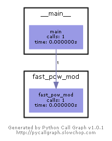
测试案例
运行结果截图
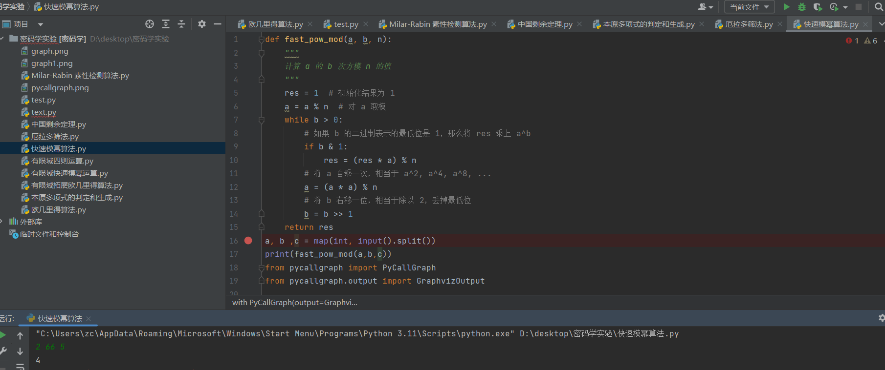
实验感想
快速模幂算法这种思想可以拓展应用于许多方面，如矩阵快速幂，是非常好用的思想与方法。
中国剩余定理
算法原理
中国剩余定理是一种求解同余方程组的方法。同余方程组形如：
\[x \equiv a_1 \pmod{m_1}\\x \equiv a_2 \pmod{m_2}\\\vdots\\x \equiv a_k \pmod{m_k}\]
其中，\(a_1, a_2, \dots, a_k\) 和 \(m_1, m_2, \dots, m_k\) 都是已知的整数。
设 \(M = m_1 m_2 \dots m_k\)，则 \(M/m_i\) 和 \(m_i\) 互质。记 \(M_i = M/m_i\)，则存在整数 \(y_i\) 使得 \(M_i y_i \equiv 1 \pmod{m_i}\)。则 \(x = \sum_{i=1}^{k} a_i M_i y_i\) 是同余方程组的解，且 \(x \equiv r \pmod{M}\)，其中 \(r = \sum_{i=1}^{k} a_i M_i y_i\)。
具体代码
def chinese_remainder_theorem(n, a): |
函数调用关系图
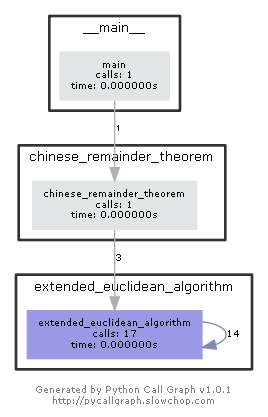
测试样例
运行结果截图
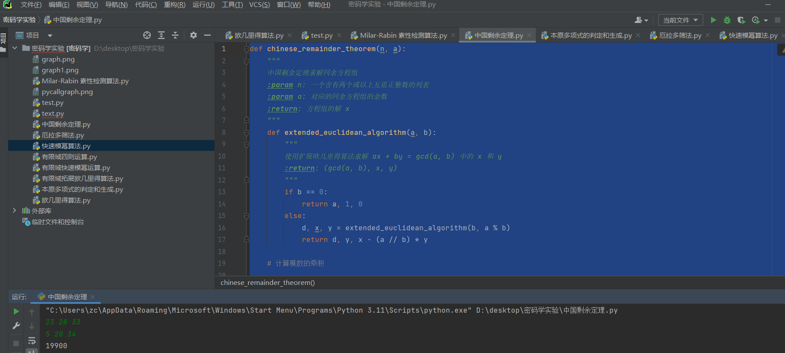
实验感想
在本次实验中，我通过学习中国剩余定理的原理及其在解决同余方程组问题中的应用，掌握了其基本思想和计算方法。在实践过程中，我发现输入中只考虑了全是互素的情况，而未考虑不互素的情况。如果出现不互素的情况，我们需要将合数分解成多个式子，然后再进行化简，以便使用扩展欧几里得算法求解对应的系数。这一点需要特别注意，否则可能会导致错误的结果。通过本次实验，我不仅深化了对中国剩余定理的理解，还学会了如何在处理实际问题时考虑多种可能性，这对我今后的学习和工作都具有重要的启示意义。
MillerRobin素性检测算法
Miller-Rabin 检测算法是一种用于判断一个数是否为质数的算法，它在计算复杂度和可靠性之间取得了一个很好的平衡。
算法原理
Miller-Rabin 算法的基本思路是，对于一个待判断的整数 n，如果 n 是质数，则存在一个整数 a（1 < a < n），使得：
\[ a^{n-1}\equiv1modn \]
此外，对于一个合数n，如果能够找到一个整数a，满足：
\[a^{n-1}\neq1modn\]
那么n一定不是质数，并且由于在小于n的整数中米勒拉宾证据出现的概率是75%因此，Miller-Rabin 算法的核心是选择一个适当的 a，利用快速幂算法计算 \(a^{n-1} \bmod n\)，判断其是否等于 1，如果不等于 1，则可以确定 n 不是质数。为了提高算法的可靠性，Miller-Rabin 算法需要进行多次检测，每次选择不同的随机数 a，如果多次检测都得到了 \(a^{n-1} \equiv 1 \pmod{n}\)，那么可以认为 n 是质数的概率非常高。
实验过程
伪代码
以下是 Miller-Rabin 素性检测算法的伪代码：
输入：正整数 \(n\) 和检测次数 \(k\)
输出：True 表示 \(n\) 可能为素数，False 表示 \(n\) 不是素数
- 如果 \(n < 2\)，返回 False
- 如果 \(n = 2\)，返回 True
- 如果 \(n\) 是偶数，返回 False
- 将 \(n - 1\) 表示成 \((2^r) \cdot d\) 的形式，其中 \(d\) 是奇数
- 进行 \(k\) 次检测，每次检测如下：
- 随机选择一个整数 \(a\)，\(2 \leq a \leq n-2\)
- 计算 \(x = a^d \bmod n\)
- 如果 \(x = 1\) 或者 \(x = n-1\)，则跳过下一步
- 对 \(r-1\) 次幂运算，如果 \(x = n-1\)，则跳出循环
- 如果所有的幂运算都不满足 \(x = n-1\)，则返回 False
- 如果经过 \(k\) 次检测都没有发现 \(n\) 不是素数，返回 True
其中，\(\bmod\) 符号表示模运算，\(\cdot\) 符号表示乘法运算，\(2 \leq a \leq n-2\) 表示 \(a\) 的取值范围，\(k\) 表示进行检测的次数，\(r\) 和 \(d\) 表示将 \(n-1\) 表示成 \((2^r) \cdot d\) 的形式中的两个参数。
流程图
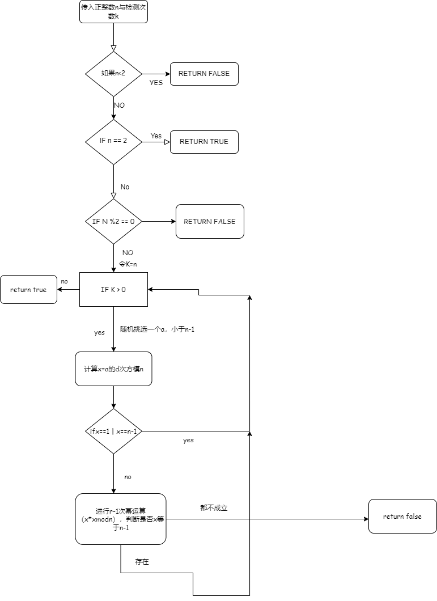
测试代码
import random |
函数调用图
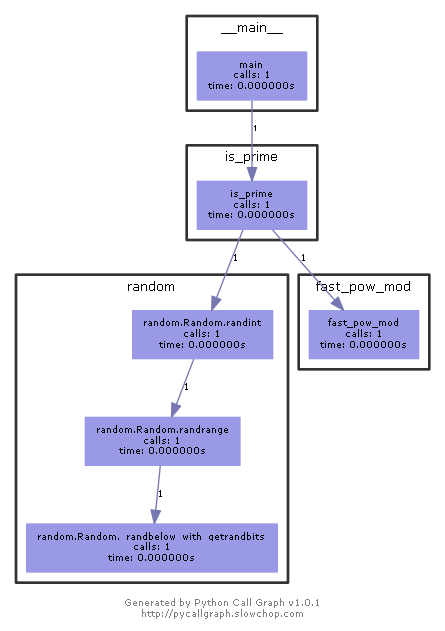
测试样例
运行结果截图
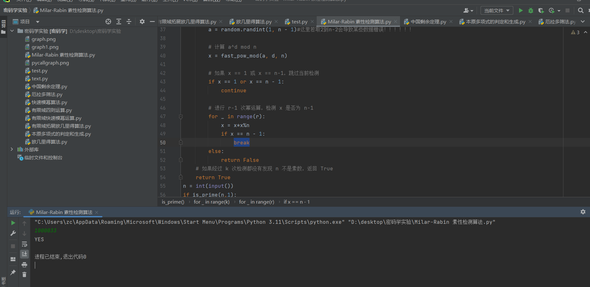
实验感想
流程图真的超难画，要多多练习，提升自己的工作与学习效率
厄拉多塞筛法
算法原理
厄拉多塞筛法是一种用于求解素数的算法。其基本思想是从2开始，将每个质数的倍数都标记成合数，以达到筛选素数的目的。
算法流程如下：
- 构造一个从2开始的自然数序列。
- 取序列中当前未被标记为合数的最小素数p，将其作为新的质数。
- 将p的倍数，即p2、p3、p*4……标记为合数。
- 如果序列中未被标记为合数的最小素数大于p，说明还有未被筛选的素数，返回步骤2；否则算法结束。
实验过程
测试代码
# 在这里，生成器表达式(str(num) for num in nums)将列表中的每个整数转换为字符串， |
函数调用图
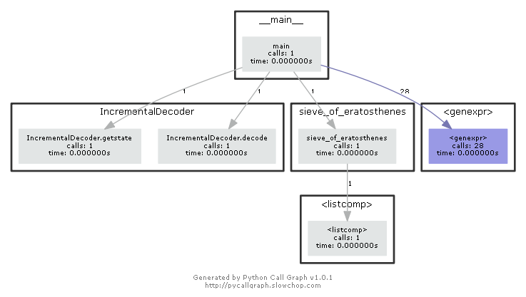
测试样例
运行结果截图
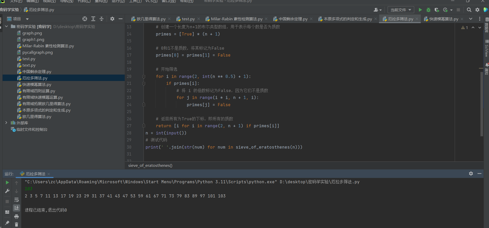
实验感想
厄拉多塞筛法是一种简单、高效的求素数算法，其时间复杂度为O(nloglogn)。在实现时，我们可以用一个标记数组记录每个自然数是否为素数，从而避免了大量的重复计算。通过本次实验，我进一步了解了这种算法的原理和实现方法，也学会了在Python中实现厄拉多塞筛法的代码。
有限域四则运算
算法流程
首先定义五个函数：
- addGF(a, b)函数实现了在二元域上的加法，使用异或运算实现；
- subGF(a, b)函数实现了在二元域上的减法，使用异或运算实现；
- mulGF(a, b, n)函数实现了在二元域上的乘法，使用移位和异或运算实现，其中参数n表示模多项式，即二元域上的特征多项式；
- divGF(a, b)函数实现了在二元域上的除法，使用移位和异或运算实现，其中返回值为二元组(c1, c2)，c1表示商，c2表示余数；
- operationGF(a, b, g)函数根据输入的操作符g，调用相应的函数实现二元域上的加减乘除操作，其中a, b分别表示两个操作数，g为操作符。
接着在主程序中，首先读入三个参数a, g, b，其中a和b为16进制数，g为操作符，然后将a和b转换为整数类型，最后调用operationGF(a, b, g)函数执行对应的操作。
二元域上的加减法运算很容易理解，即对应位进行异或运算即可。乘法的实现主要是使用移位和异或运算，不断将a左移一位并模n取余，若b当前的二进制位为1，则将当前的a与result进行异或操作；而除法的实现主要是使用移位和异或运算，通过不断将b左移，然后异或操作a来得到商和余数。值得注意的是，除法的实现需要先判断a和b的位数关系，如果a的位数小于b，则商为0，余数为a。而如果a的位数与b的位数相等，则商为1，余数为a异或b。
实验过程
测试代码
def addGF(a,b): |
函数调用图
这里运行的是乘法
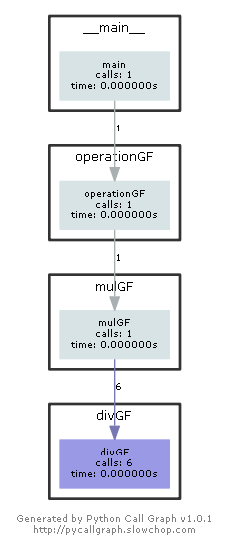
测试样例
运行结果截图
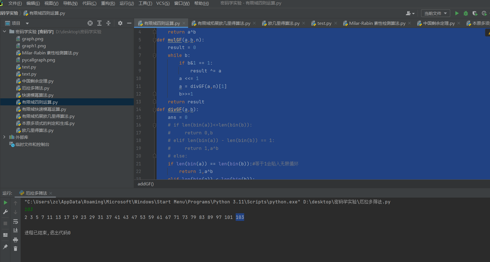
实验感想
这次代码我并没有完全按照老师的算法来，而是在理解之上自己完成，但是在过程中，我遇到了一个致命的错误，我对.bit_length方法理解到位，没有经过查证与实验，就下结论0是它的值为1，导致bug频出且难以找到，以后对于新的函数与方法，一定要严谨求学，千万不可马大哈。
有限域的快速幂算法
算法流程
这里的算法流程与整数域的快速幂算法相同，只是改变了加减乘除的定义。
实验过程
测试代码
def addGF(a,b): |
函数调用图
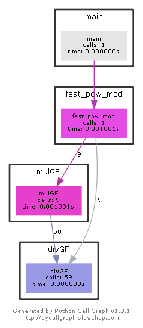
测试样例
运行结果截图
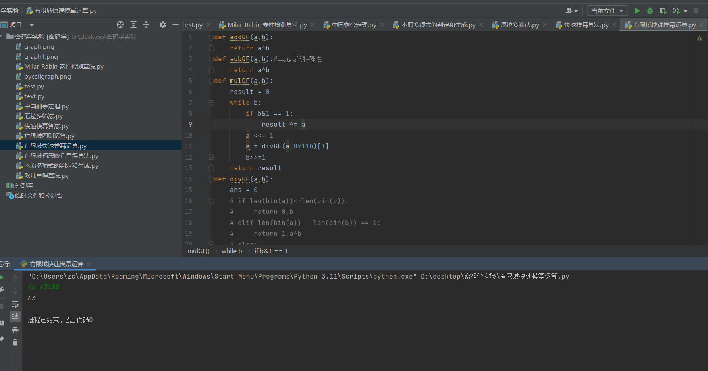
实验感想
在有限域上进行快速模幂运算时，可以利用有限域的四则运算中的 multiply 运算实现。值得注意的是，这里不需要取模操作%n，因为有限域的乘法本身就会起到取模的效果。此外，在实现模幂运算时，需要注意模数的实现，以方便后面实现其他算法的使用。此处注意输出时可以用format的输出方式，不然个位数无法自动补齐为两位数。
有限域拓展欧几里得算法
算法流程
有限域上的扩展欧几里得算法与扩展欧几里得算法的流程也是一样的， 只不过需要将其中的加减乘除运算换为有限域上的四则运算。
实验过程
测试代码
def addGF(a,b): |
函数调用图
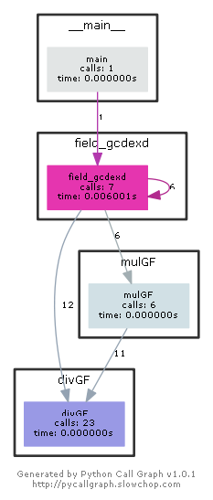
测试样例
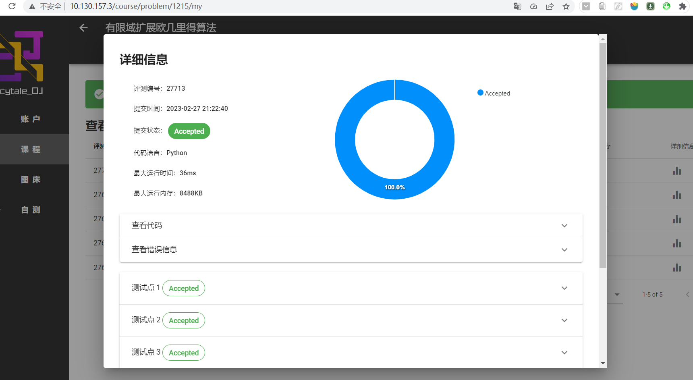
运行结果截图
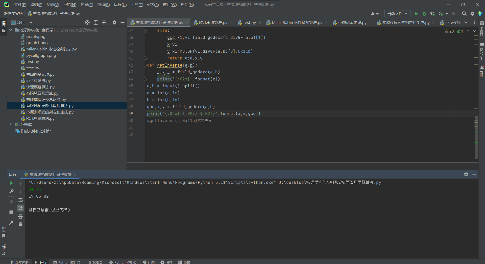
实验感想
此处我由于上方提到的对除法中.bit_length方法的误解导致bug频出 ，且我将目光局限于拓展欧几里得算法本身，更是难以改正，从此我学会了要将目光放到整个程序，去排除所有可能的错误，而不是在一个圈子中反复兜兜转转。
有限域的逆元的生成
算法原理
假设 \(x\) 和 \(n\) 是正整数，若存在正整数 \(a\)，使得 \(ax \equiv 1 \pmod{n}\)，则称 \(a\) 是 \(x\) 在模 \(n\) 意义下的逆元。
在求解逆元时，使用有限域扩展欧几里得算法。假设要求 \(x\) 在模 \(n\) 意义下的逆元 \(a\)，则需要解方程 \(ax+ny=1\)，其中 \(x\) 和 \(y\) 是扩展欧几里得算法的输出结果。如果 \(x<0\)，则可以将 \(x\) 加上 \(n\) 直到 \(x\) 变成非负整数。
若 \(x\) 在模 \(n\) 意义下无逆元，则 \(x\) 和 \(n\) 不是互质的，即它们有一个大于 \(1\) 的公约数，则此时无逆元。
实验过程
测试代码
def addGF(a,b): |
函数调用图
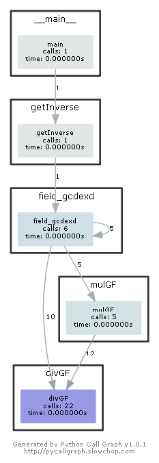
测试样例
运行结果截图
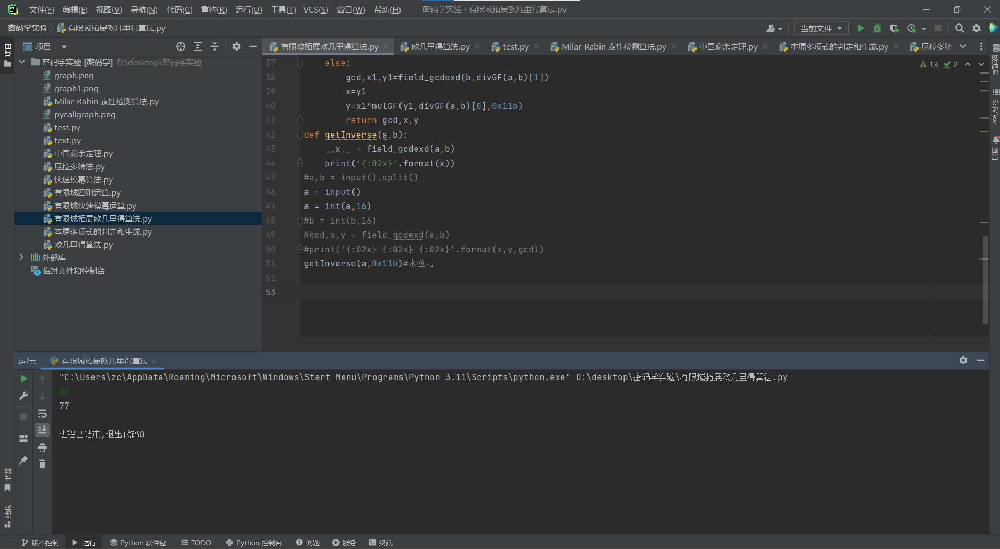
实验感想
本原多项式的判定与生成
算法原理
若 \(f(x)\) 是 \(GF(2^2)\) 上的不可约多项式，且 \(f(x)\) 的根是 \(GF(2^8)\) 的本原元，则称 \(f(x)\) 为 \(GF(2^2)\) 上的本原多项式；另一等价定义如下：
若一个 \(n\) 次多项式 \(f(x)\) 满足以下条件：
- \(f(x)\) 为不可约多项式；
- \(f(x)\) 可整除 \(x^{2n}+1\) (\(n=2^m-1\))；
- \(f(x)\) 不能整除 \(x^q+1\) (\(q<n\))；
则称 \(f(x)\) 为 \(n\) 次本原多项式。
故我们只需对遍历0b100000000与0b1000000000中的所有数字，并利用这三个条件进行判定找出所有不可约多项式即可
实验过程
测试代码
def addGF(a,b): |
函数调用图
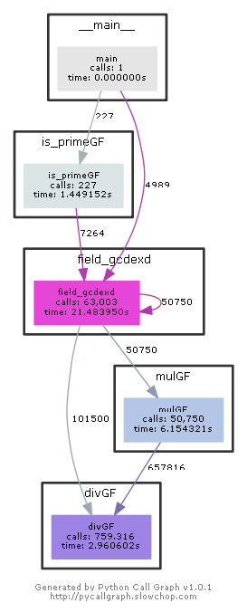
测试样例
运行结果截图
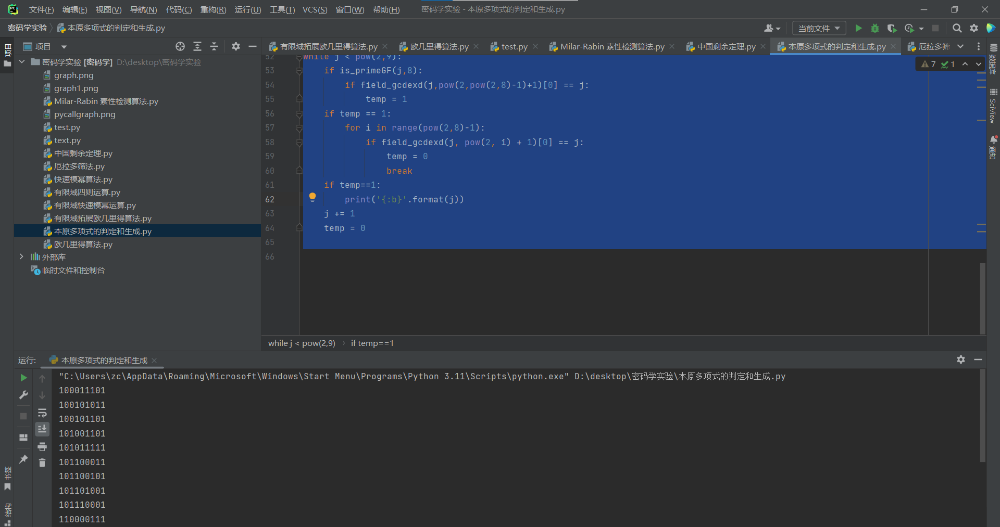
实验感想
这里注意在遍历过程中（第一个条件第三个条件都需要遍历）出现偏差应及时跳出循环，避免多余的时间消耗。
思考与讨论
厄拉多塞筛法中如何减少重复比较以提高速度
- 可以将标记数组从布尔型改为整型，用不同的数字表示不同的标记状态。例如，用0表示未标记的数，用1表示标记为质数的数，用2表示标记为合数的数，等等。这样可以在标记合数时直接进行标记，而不需要重复判断是否已经被标记。
- 可以只考虑奇数进行筛选，因为偶数除了2以外都不是质数。
以上是对厄拉多赛筛法的小提升
或许我们可以考虑欧拉筛法
具体算法如下：
def euler_sieve(n): |
中国剩余定理可以改进的地方
线性同余方程组的情况：对于一些线性同余方程组，可以使用高斯消元法来求解，比中国剩余定理更为高效。
不同质数情况下的方程组：
在不同质数情况下的方程组中，中国剩余定理（CRT）可以使用 Garner 算法或 CRT 重构算法来加速。这是因为当模数不同时，CRT 不能直接使用，需要将方程组转化为同余方程组。下面分别介绍 Garner 算法和 CRT 重构算法。
Garner 算法是一种基于连续求模的快速求解同余方程组的方法。具体来说，它将同余方程组中的每个方程分解为某个数乘以模数加上一个余数的形式，然后依次计算每个数。该算法具有良好的时间复杂度和空间复杂度，可以处理任意多个不同质数的同余方程组，但需要对每个方程进行分解，对大质数的处理会有一定的计算量。
CRT 重构算法也是一种快速求解同余方程组的方法。该算法的核心思想是将不同质数的模数两两合并，然后使用扩展欧几里得算法求解合并后的方程组，最后利用中国剩余定理将合并后的解还原为原方程组的解。该算法不需要对每个方程进行分解，因此不受大质数的影响，但需要多次使用扩展欧几里得算法，对时间和空间的要求较高。
总体而言，Garner 算法适用于任意多个不同质数的同余方程组，且在质数较小时效率更高，而 CRT 重构算法适用于质数数目较少的情况，但是计算时间和空间复杂度都比 Garner 算法高一些。
在\(GF(2^n)\)中，求逆运算非常复杂，是否有其他方法能够提供更简单的求逆算法
多项式牛顿迭代法
经过查阅资料，或许我们可以使用牛顿迭代法
牛顿迭代法（Newton's method），也称作牛顿-拉夫逊迭代法（Newton-Raphson method），是一种用于寻找方程的根的迭代方法。
牛顿迭代法的基本思想是：假设我们已经有了一个初始估计值 \(x_0\)，然后通过下面的公式不断迭代，直到收敛：
\[x_{n+1} = x_n - \frac{f(x_n)}{f'(x_n)}\]
其中 \(f(x)\) 代表方程，\(f'(x)\) 代表 \(f(x)\) 的导数。\(x_{n+1}\) 是 \(x_n\) 的一个更好的近似值。
简单来说，牛顿迭代法的思路是：假设 \(f(x)\) 在 \(x_0\) 处有一根，那么可以将其近似为其一阶泰勒展开式，然后用一阶泰勒展开式的根作为 \(f(x)\) 的根的近似值，即：
\[f(x) \approx f(x_0) + f'(x_0)(x - x_0)\]
将上式的左边看做0，解得：
\[x \approx x_0 - \frac{f(x_0)}{f'(x_0)}\]
接着，用新的近似值 \(x_1\) 代替 \(x_0\)，然后重复上述步骤，直到达到精度要求为止。
牛顿迭代法的优点在于收敛速度非常快，通常情况下可以在几次迭代之后达到指定的精度要求。但是它也有一些缺点，最主要的是如果方程的初始估计值不够好，可能会导致迭代发散，或者迭代过程中出现震荡的情况。
第二次实验报告
实验目的
- 通过本次实验，了解古典加密算法思想，掌握常见的古典密码。
- 学会应用古典密码以及针对部分古典密码的破译。
实验环境
- 操作系统：Windows 10
- 编程语言：Python3.11.1
仿射密码
算法流程
仿射密码是一种基于数学运算的加密算法，其流程如下：
- 输入两个正整数a和b，字符串s，与选择值c。
- 用欧几里得拓展算法算出a与26的最大公约数，若不为1，则输出“invalid key”，若为1，则判断c的值
- 若c为0，则进入解密算法，若c为1，则进入加密算法
- 在加密函数affine_encode中，根据输入的a和b，将每个小写字母转化为数字后进行仿射变换得到密文，最后将密文拼接起来并返回。
- 在解密函数affine_decode中，先根据a计算a的逆元a_inv，然后根据a_inv和b将密文恢复为明文，最后将明文拼接起来并返回。
- 最后打印result即可
函数调用
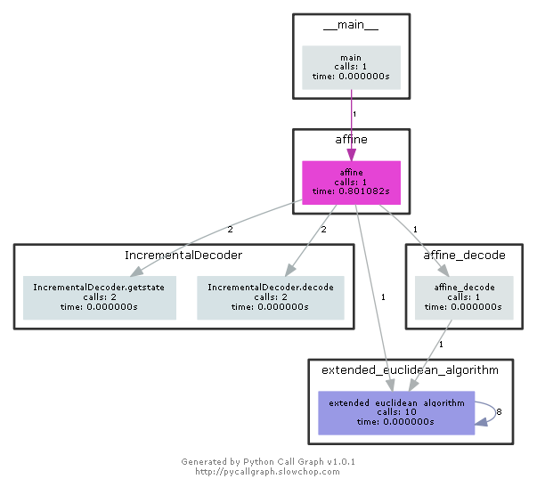
测试样例
运行结果截图
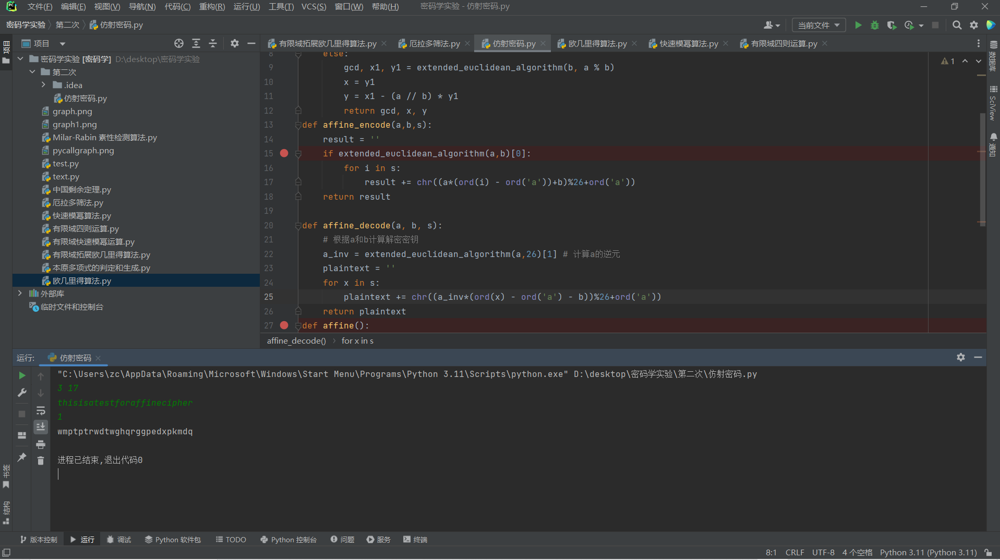
具体代码实现
def extended_euclidean_algorithm(a, b): |
单表代替密码
算法流程
- 输入小写字符串t1,小写字符串t2，，明文/密文s,模式选择op
- 将密钥按照明文的长度重复，直到和明文等长。
- 判断op，若为1，则进入substitution_encrypt
- 对于每个明文字符，找到它在字母表中对应的数字，假设它的值为 \(p\)。
- 找到相同位置的密钥字符，用其做代替，作为密文中的一个字符。
- 若op为0，则进入substitution_decrypt
- 对于每个密文字符，找到它在字母表中对应的数字，假设它的值为 \(p\)。
- 找到相同位置的明文字符，用其做代替，作为明文中的一个字符。
- 最后输出结果
样例测试
运行结果截图
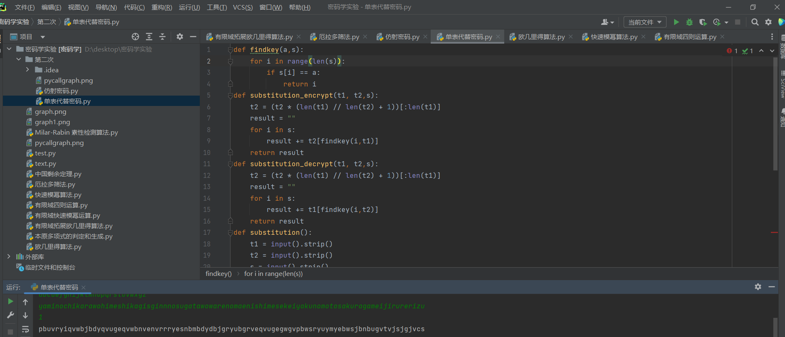
函数调用图
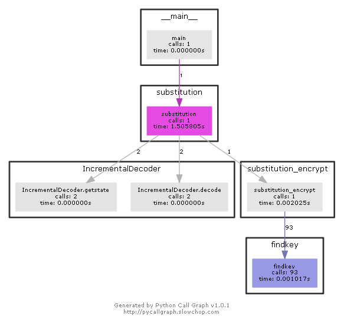
代码实现
def findkey(a,s): |
维吉尼亚密码
- 输入小写字符串k(密钥),小写字符串s，模式选择op
- 将密钥按照明文的长度重复，直到和明文等长。
- 判断op，若为1，则进入vigenere_encrypt
- 对于每个明文字符，找到它在字母表中对应的数字，假设它的值为 \(p\)。
- 对于相同位置的密钥字符，找到它在字母表中对应的数字，假设它的值为 \(k\)。
- 将 \(p\) 和 \(k\) 相加，取模 26，得到加密后的数字 \(c\)。
- 找到数字 \(c\) 对应的字母，并将它作为密文的一个字符。
- 重复 3~6 步，直到对所有明文字符都进行加密。
- 若op为0，则进入vigenere_decrypt
- 对于每个密文字符，找到它在字母表中对应的数字，假设它的值为 \(p\)。
- 对于相同位置的密钥字符，找到它在字母表中对应的数字，假设它的值为 \(k\)。
- 将 \(p\) 和 \(k\) 相减，取模 26，得到加密后的数字 \(c\)。
- 找到数字 \(c\) 对应的字母，并将它作为明文的一个字符。
- 重复 3~6 步，直到对所有密文字符都进行解密。
- 最后输出结果
测试样例
运行结果截图
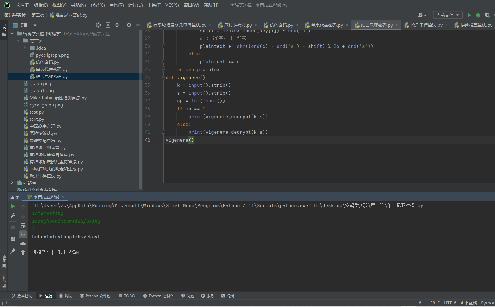
函数调用图
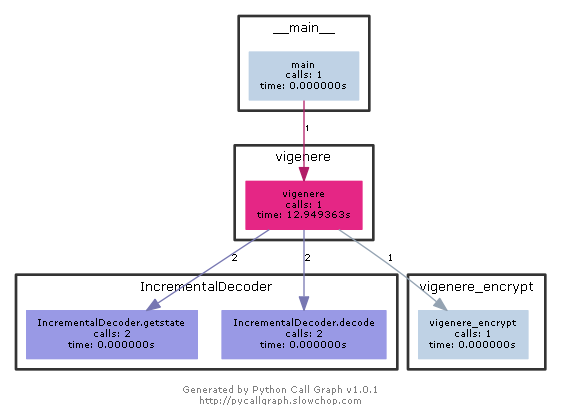
代码实现
import string |
enumerate()是 Python 内置函数之一，可以将一个可迭代对象转换成一个枚举对象。枚举对象是一个由索引和对应值组成的元组序列。在循环过程中，可以通过enumerate()同时迭代序列的索引和值。在上面的代码中，
enumerate()函数用于在循环中同时遍历密文中的每个字符和对应的索引，其中i代表当前字符在密文中的索引，c代表当前字符的值。这样就可以通过密钥字符串中相应位置的字符来计算每个字符的加密或解密偏移量，实现维吉尼亚密码的加密和解密过程。
思考与讨论
可以看到，对于明文中的每个字符，它们都被加上了密钥中对应位置的字符，然后对 26 取模得到了密文中的每个字符。
解密的过程与加密过程相似，只需要使用密钥的字符对应的数字减去密文字符对应的数字，然后再对 26 取模，得到明文字符对应的数字。最后，将这些数字转换回字母就可以得到明文了。
维吉尼亚密码的优点在于使用了密钥对明文进行多次代换，从而增加了密码的安全性。缺点在于如果密钥过短，或者密文长度足够长，那么密码就容易被破解
Vernam密码
代码流程
- 读入三个参数，分别为字符串k，字符串s，与整数op
- 若op==1.则进入vernam_encrypt()
- 首先，将消息和密钥转换为二进制字符串。
- 接下来，对密钥进行重复，直到长度与消息相等。
- 对消息和密钥进行异或运算，得到密文的二进制串。
- 将密文二进制串转换为字符串输出
- 若op==0,则进入vernam_decrypt()。
- 将密文和密钥转换为二进制字符串。
- 对密钥进行重复，直到长度与密文相等。
- 对密文和密钥进行异或运算，得到原始消息的二进制表示。
- 将二进制字符串转换为原始消息输出。
- 打印结果
样例测试
运行结果截图
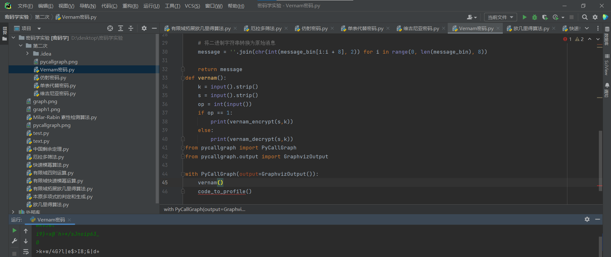
函数调用图
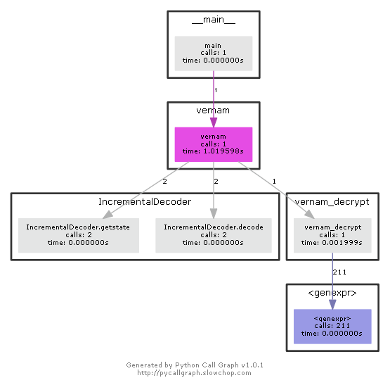
思考
过程中遇到了如下细节问题，ciphertext_bin[i:i + 8]是从哪切到哪
ciphertext_bin[i:i+8]表示从字符串ciphertext_bin中的第i个字符开始（包括第i个字符），切片长度为8的一个子字符串。例如，假设ciphertext_bin = "110010001011011001010000", 当i=0时，ciphertext_bin[i:i+8]返回的是"11001000"，当i=8时，返回的是"10110110"。
之后经过和同学讨论发现再此题的情况下根本不用全部转为二进制再转回来，直接两个字符串一 一异或即可
栅栏密码
代码流程
- 输入三个参数：s、k 和 op。
- 检查 op 的值以确定是加密还是解密消息。
- 如果 op 为 1，则加密s。 创建一个名为 fence 的空列表列表，其中包含 k 个空子列表。 将名为 count 的计数器变量初始化为 0。
- 构造循环，遍历消息字符串中的每个字符， 将字符添加到 fence 的第 count 个子列表中，然后将 count 加 1 并对 k 取模以确保 count 保持在子列表索引范围内。
- 一旦所有字符都添加到适当的子列表中，按顺序连接子列表以形成称为 cipher 的加密消息字符串。
- 将密码字符串作为加密消息返回。
- 如果 op 为 0，则解密s。 创建一个名为 fence 的空列表列表，其中包含 k 个空子列表。
- 用消息字符串的长度除以k，计算fence的每个子列表中的字符数（无法整除的话不同子列表之间的字符数不相同，部分为div，部分为div+1）。 将结果存储在 div 中。 通过将消息长度与 k 取模来计算具有附加字符的子列表的数量。 将结果存储在 mod 中。 将名为 temp 的临时变量初始化为 0。
- 如果 mod 不为 0，则存在将具有附加字符的 mod 子列表。 循环遍历 mod 的范围。 对于每个子列表索引 i，将 message 中的下一个 div+1 个字符分配给 fence[i] 并将 temp 递增 div+1 以移动到下一组字符。
- 一旦分配了所有带有附加字符的子列表，循环遍历 mod 到 k 的范围。 对于每个子列表索引 i，将下一个 div 字符从 message 分配给 fence[i] 并将 temp 递增 div 以移动到下一组字符。
- 如果 mod 为 0，则所有子列表的字符数相同。 遍历 k 的范围。 对于每个子列表索引 i，将下一个 div 字符从 message 分配给 fence[i] 并将 temp 递增 div 以移动到下一组字符。
- 初始化一个名为 plain 的空字符串来存储解密后的消息。 将名为 length 的变量初始化为 -1。 遍历消息字符串中的每个字符。 通过对当前索引与k取模计算字符所属的子列表的索引。 如果索引为 0，则将长度增加 1 以移动到每个子列表中的下一个字符。 将 fence 子列表中的适当字符附加到 plain。
- 返回纯字符串作为解密消息。
- 最后将结果打印出来
测试样例
运行结果截图
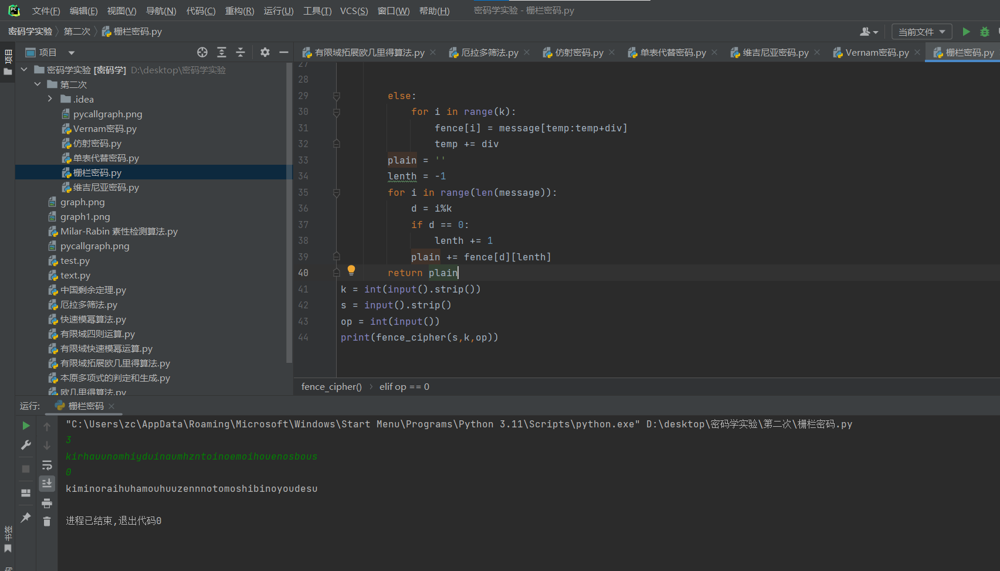
函数调用图
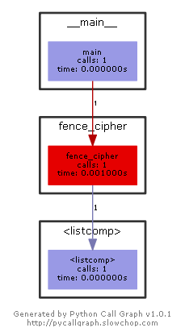
讨论与思考
在写这个程序的过程中，我对python独有的列表推导式有了更加深刻的认识，我发现它真是非常的简洁美观方便！
例：fence = [[] for _ in range(rails)]
这行代码使用了列表推导式的语法，生成了一个由
rails个空列表组成的列表。这里的for _ in range(rails)是一个for循环语句，它在range(rails)中迭代rails次，每次迭代都会执行一次循环体。_是一个特殊的变量名，它表示我们不需要使用循环计数器的值，所以将其省略。由于循环体没有使用计数器的值，因此可以将其替换为一个下划线_，表示占位符。循环体中的[]表示创建一个空列表，这个空列表会被添加到最外层的列表中。因此，通过[[] for _ in range(rails)]这一列表推导式，可以创建一个由rails个空列表组成的列表。
Hill密码
运行结果截图
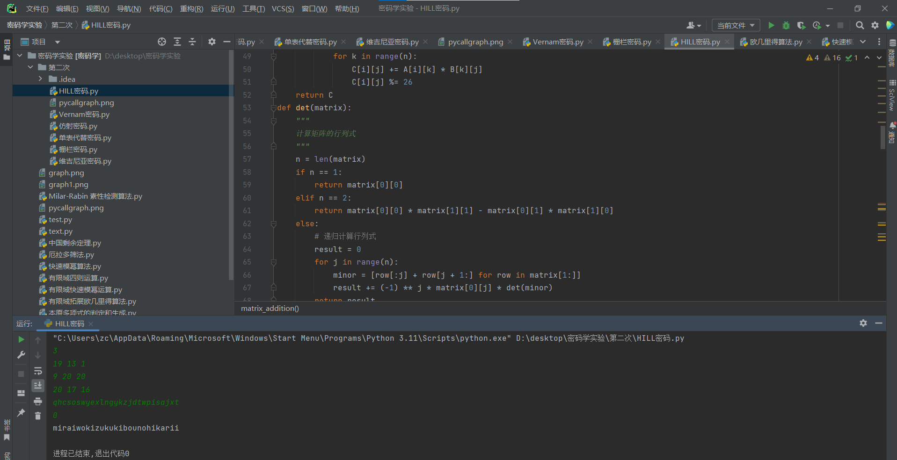
测试样例
函数调用图
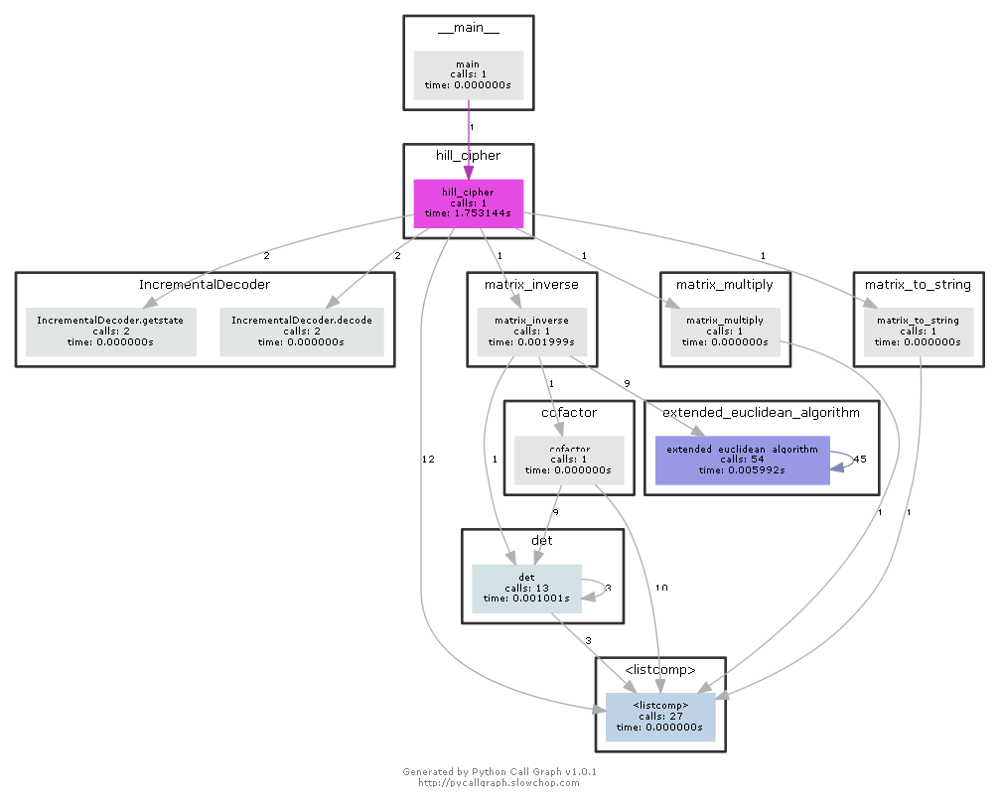
流程图
伪代码
2. 定义函数`matrix_multiply(A, B, mod)`用于实现矩阵相乘并返回结果矩阵。
3. 定义函数`det(matrix)`用于计算矩阵的行列式并返回结果。
4. 定义函数`cofactor(matrix)`用于构造矩阵的伴随矩阵并返回结果。
5. 定义函数`matrix_inverse(matrix, mod)`用于计算矩阵在模mod下的逆矩阵并返回结果。
6. 定义函数`matrix_to_string(s, m, n)`用于将矩阵转化为字符串并返回结果字符串。
7. 定义函数`string_to_matrix(s, n)`用于将字符串转化为矩阵并返回结果矩阵。
- 定义函数 hill_cipher 用于实现Hill密码算法的加解密过程。
- 读入矩阵大小n,读入n * n的整数矩阵key
- 读入待加密或解密的字符串s。
- 通过string_to_matrix将字符串s转化为n * k的整数矩阵s_matrix。
- 读入操作s数op。
- 如果op为1，表示进行加密操作：
- 再mod26下计算密文矩阵c_matrix = s_matrix * key。
- 调用matrix_to_string将密文矩阵转化为字符串c。
- 输出字符串c。
- 如果op为2，表示进行解密操作：
- 计算key在模26下的逆矩阵inverse_key。
- 如果inverse_key不存在，则返回None。
- 如果存在，计算明文矩阵p_matrix = s_matrix * inverse_key。
- 调用matrix_to_string将明文矩阵转化为字符串c。
- 输出字符串p。
讨论与思考
经过资料搜索，发现高斯消元法和通过伴随矩阵求逆的代码实现复杂度都大于等于O(\(N^3\))，并并适用于大型矩阵，而大型矩阵通常采用LU分解法和QR分解法，且由于暂时没想好高斯消元法处理对角线为零的情况如何处理，故采用伴随矩阵求逆的方法。
LU分解法将一个矩阵分解为一个下三角矩阵L和一个上三角矩阵U的乘积，即A = LU。求解逆矩阵时，首先对矩阵进行LU分解，然后求解两个方程组Ly = I和Ux = y，其中I为单位矩阵，y和x分别为两个未知向量。这样可以较为高效地求解矩阵的逆。
QR分解法将一个矩阵分解为一个正交矩阵Q和一个上三角矩阵R的乘积，即A = QR。求解逆矩阵时，首先对矩阵进行QR分解，然后求解方程组Rx = Q-1，其中Q-1为Q的逆矩阵，x为未知向量。这样也可以较为高效地求解矩阵的逆。
这些方法都可以在Python中实现，但实现过程可能比较复杂，需要一定的线性代数基础。在实际应用中，也可以使用一些现成的线性代数库来实现矩阵逆的计算。
矩阵密码
样例测试
运行结果截图
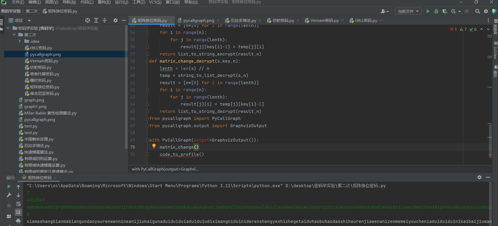
函数调用图
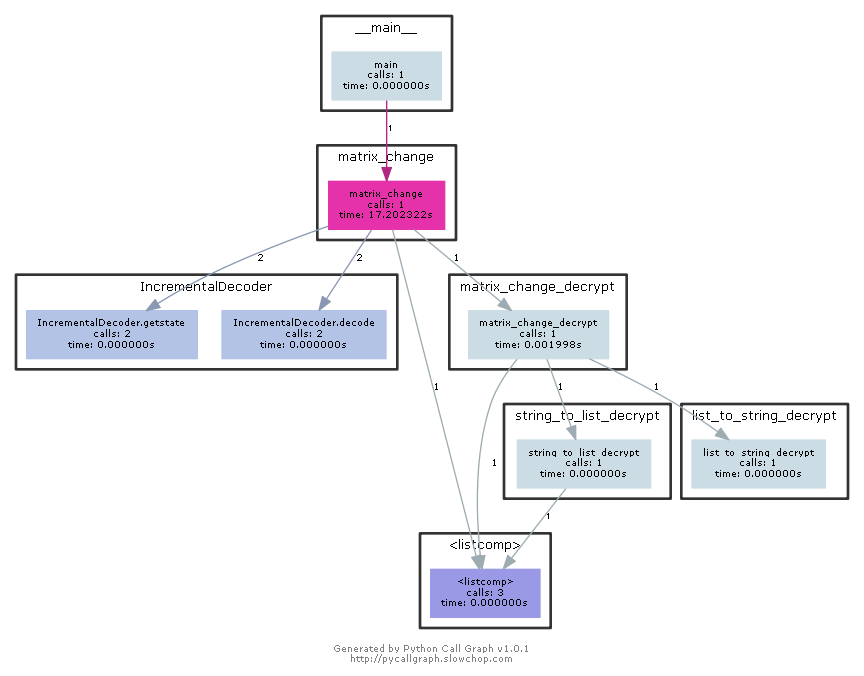
思考与讨论
受到学长的指点，不要因为代码短就不封装，一个好的主函数应该是只由函数调用构成的
命名不要怕复杂，暂时的工作量可以帮助你在debug或者未来再看自己代码时帮助理解
对列表转字符串的方法有了更多的了解
加法密码的字母频率攻击
样例测试
运行结果截图
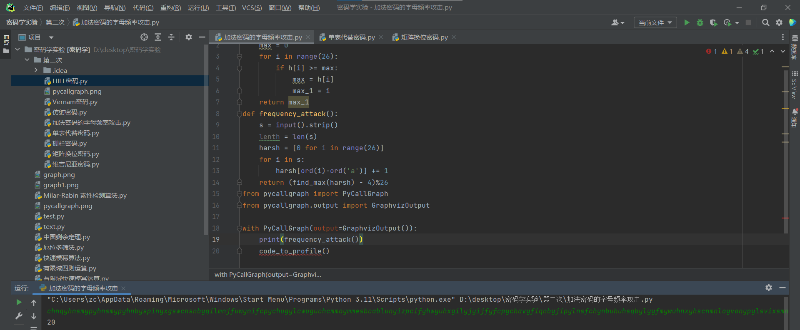
函数调用图
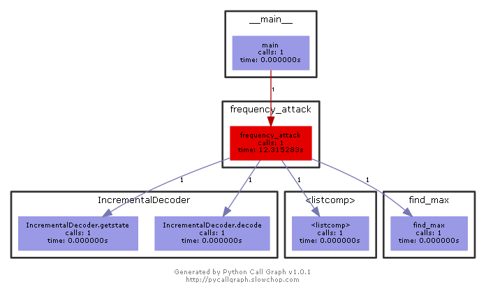
思考与讨论
搜集了下英文中的字母频率
| 字母 | 英语中出现的频率 |
|---|---|
| a | 8.167% |
| b | 1.492% |
| c | 2.782% |
| d | 4.253% |
| e | 12.702% |
| f | 2.228% |
| g | 2.015% |
| h | 6.094% |
| i | 6.966% |
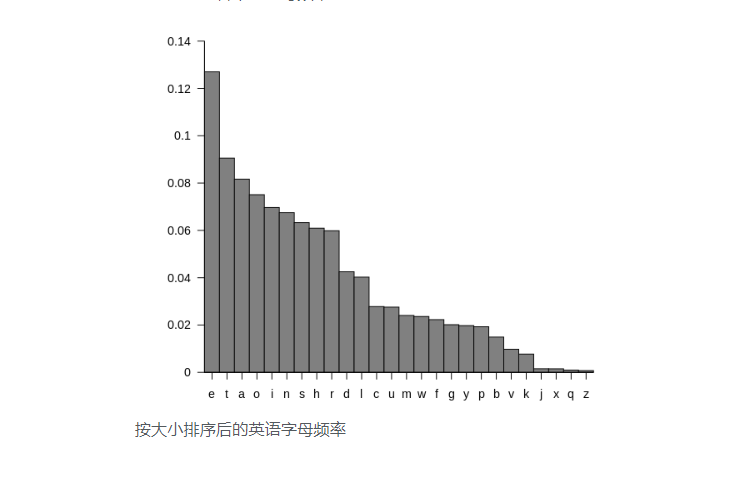
希尔密码的已知明文攻击
样例测试
运行结果截图
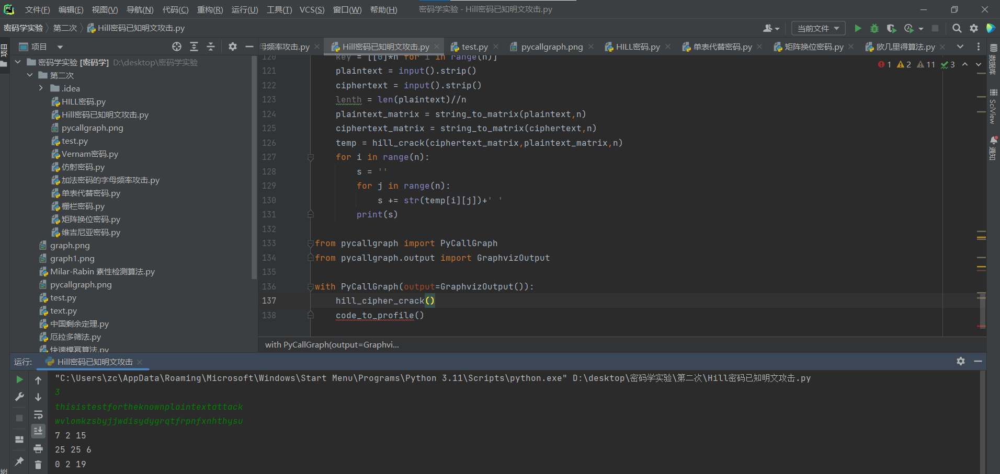
函数调用图
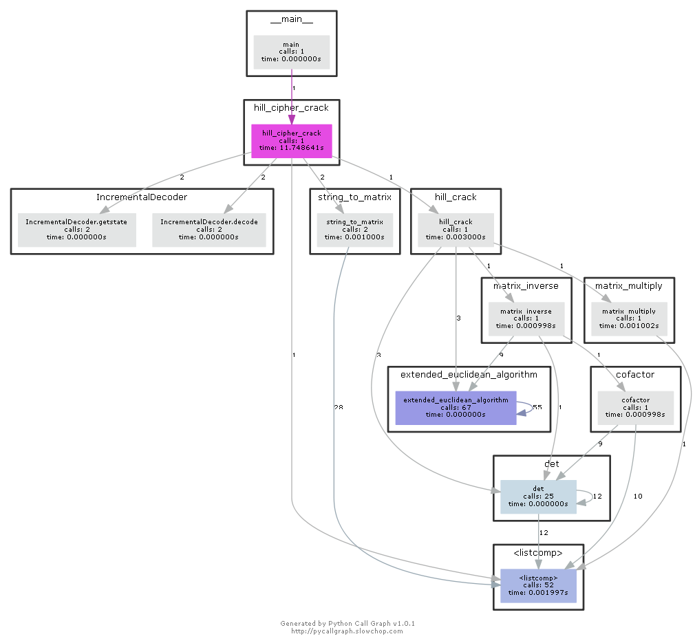
思考与讨论
这里发现了一个大bug，矩阵可逆的条件在整数域和\(Z_{26}\)的情况下并不相同，（但是对于不可逆的矩阵它甚至同样可以求可逆矩阵 求出来的可逆矩阵与矩阵相乘会是单位矩阵的整数倍），这个问题一定要重视重视再会重视！
单表代替密码的字母频率攻击
对于自然语言，如果取一本非专业书籍，统计足够长的课文就会发现，字母(或字符)出现的频率会反映出相应语言的统计特性。统计大量的课文定会发现，相应语言中每个字母在相应语言中出现的概率。于是便得到该语言字母表上的一个概率分布。
一、英文字母
一由独立试验产生明文单码，Beker在1982年统计的样本总数为100
362，得到单码的概率分布见下表：  根据上表，英文字母出现的概率按大小排列如下：
根据上表，英文字母出现的概率按大小排列如下：
E T A O I N S H R D L C U M W F G Y P B V K J X Q Z
在上表中，不少字母出现的概率近乎相等。为了应用方便，常将英文字母表按字母出现的概率大小分类，分类情况见下表：
-------------------------- 极高频 E 次高频 T A O I N S H R 中等频 D L 低频 C U M W F G Y P B 甚低频 V K J X Q Z -------------------------- 其它语言和数据也有类似于英语语言的单字母统计特性。如果我们随意统计一段足够长的英文课文，只要内容不是太特殊，其结果一定和上表基本相同。这表明英文的一篇文章中各个字母出现的概率是基本可预测的，它将为密码分析提供一个方面的依据。 语言的单字母统计特性至少在以下两个方面没有反映出英文语言的特征： ⑴根据英文的单字母统计特性可以计算出双字母QE出现的概率为p(QE)=0.00095×0.12702≈1.21×10^(-4) 这就是说，在10^6个双字母的抽样中，QE出现的次数大约应为121次，但这不符合英文课文的实际。因为在英文课文中，QE根本不出现。 ⑵四字母SEND和SEDN在单字母统计特性下出现的概率相等，这也不符合英文的实际。总之，自然语言的单字母统计特性只反映了单字母出现的概率，而没有反映该种语言文字的字母间的相关关系。为了体现自然语言的双字母统计特性，我们需要考察该语言的文字中相邻字母对出现的频数。
二、由独立试验产生双字母。根据Beker在1982年统计的英文双字母的频数给出了双字母的频率。
统计出的英文双字母的概率最大的30对字母按概率大小排列为：
th he in er an re ed on es st en at to nt ha nd ou ea ng as or ti is et it ar te se hi of 只要我们随意统计足够长的英文课文，只要内容不是太特殊，其结果一定和上面的概率基本相同，这也表明双字母在英文课文中出现的概率是基本可预测的，它为密码分析提供了又一方面的依据。
类似的，我们还可以考察英文课文中三字母出现的频率。仍按Beker在1982年统计的结果(样本总数100 360)得到概率最大的20组三字母按概率大小排列为：
the ing and her ere ent tha nth was eth for dth hat she ion his sth ers ver 特别，the出现的频率几乎为ing的3倍。 应当强调指出，在利用统计分析法时，密文量要足够大，否则会加大密码攻击的难度。在实际通信中，除了字母外，还有诸如标点、数字等字符，它们的统计特性也必须考虑进去。数据格式、报头信息对于密码体制的安全有重要意义，在密码分析中也起着重要的作用。 在分析或攻击一份密报时利用英文的下述统计特性很有帮助。 ⑴冠词the对英文的统计特性影响很大，它使t，h，th，he和the在单字母、双字母和三字母的统计中都为高概率的元素。 ⑵英文单词中以 E,S,D,T 为结尾的超过一半 ⑶英文单词中以 T,A,S,W 为起始字母的约占一半 ⑷①在分析或攻击密文时应先找突破口，一般来说，先从the a i入手。(能一个字母独立作为单词的只有a、I，而且频率较高时优先考虑a) ②如果有“’”出现，“’”后的一个字母只能是t s l d v中的一个；如果是两个字母，则只能是re ll。(两个不同字母即是re，相同即是ll) ③其它规律：如果四字单词词末有两个相同字母，往往是ll； 以a开头的三字单词只能是and are中的一个； 两个字母的组合中如果出现q，则是u(q后几乎总是u)； 如果一个单词的开头和结尾是同一个字母，最可能的是：s t d； 两个都是辅音的双字母组合，常含有n或t；io、ou和ea是最常见的双元音字母组； 如果单词的头两个字母都是辅音，则第二个字母最可能是：r、l和h； 如果一个三次以三个辅音结尾，那最常见的是-ght和-tch； 反向双字母组合： er-re, es-se, an-na, it-ti, on-no, en-ne, ot-to,ed-de, st-ts, at-ta, ar-ra, in-ni；
小词的使用频率 1-letter: a,i,o 2-letter: of,to,in,is,it,be,as,at 3-letter: the,and,for,are,but,not,you,all 4-letter: that,with,have,this,will,your,from,they 5-letter: which,would,there
元音字母：a,e,i,o,u 元音后最常见的字母是n，元音前最常见的字母是h
常见的双字母前缀 re co un com il ir up 最常用的三字母后缀 ion ing 最常见词尾 ed es er